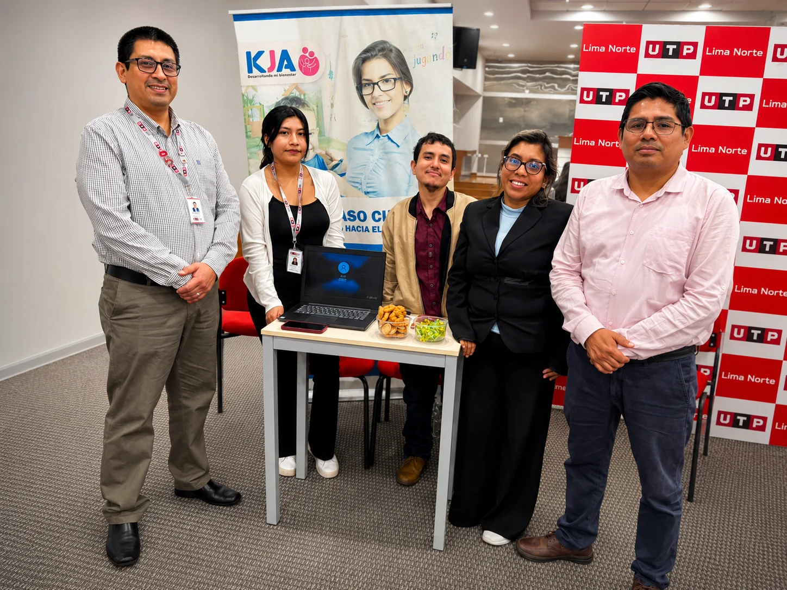

13 de octubre de 2020
Nuestro inicio
Fundado en 2020
Desarrollando tu
Bienestar
KJA Desarrollando mi Bienestar S.A.C. es un centro psicologico integral ubicado en San Luis, Lima, Peru. Nacimos el 13 de octubre de 2020 con la mision de brindar acompanamiento psicologico de calidad, basado en la ciencia, la empatia y el compromiso con cada persona.
Conoce más sobre nosotros ➔
+500Personas atendidas
+15Profesionales
4+Años de experiencia
CompromisoÉtico y profesional